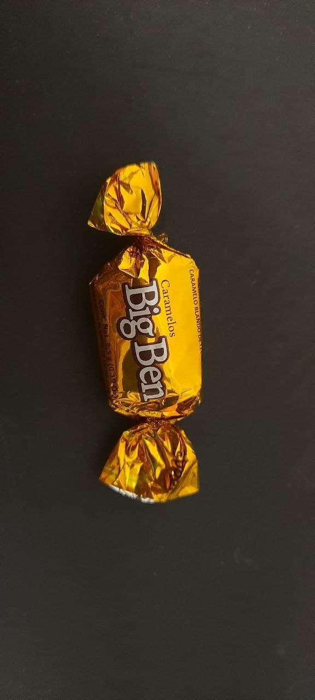

Historia de HTML
En 1990, en el CERN, Tim Berners Lee definió un sistema de almacenamiento y recuperación de
información. De tal manera que la información pudiese ser consultada de una forma estándar desde
cualquier sitio.
Con esto definió la World Wide Web (www) y HTML, información enlazada una con
otra creando el tejido que es la red (actualmente el lenguaje HTML tiene como especificación
oficial
HTML 5.0 (28 de octubre de 2014).1
Uso de listas HTML
- Primer Item
- Segundo Item
- Tercer Item
- Cuarto Item
Listas desordenadas
Algunos equipos de futbol:
- Arsenal
- Liverpool
- Chelsea
- Barcelona
Listas de definiciones
- Pizpireta
- Dicho de una mujer: Viva, pronta y aguda.
- Pulular
- Dicho de las personas, animales o cosas: Abundar y bullir en un
lugar.
- Concupiscencia
- En la moral católica, deseo de bienes terrenos y, en especial, apetito
desordenado de placeres deshonestos.
Listas anidadas
Categorías de la fauna según su alimentación
- Carnívoro
- Herbívoro
- Omnívoro
Inserción de imágenes

